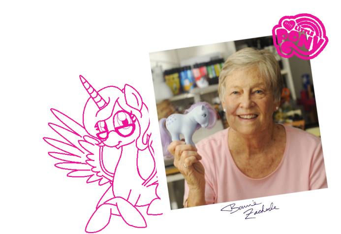

Bonnie Zacherle, mãe de todos os ponêis

My Little Pony foi desenvolvido por Bonnie Zacherle e foi introduzido pela primeira vez em agosto de 1981 como franquia de brinquedos, quando ela trabalhava para a Hasbro apresentando ideias para produtos infantis. My Little Pony surgiu a partir do seu sonho de infância de ter um cavalo, inspirando-a a cria-los em miniatura. Eles teriam crina e cauda escováveis e permitiriam às crianças usufruir de seu sonho e terem a experiencia que a criadora tanto almejava quando pequena.